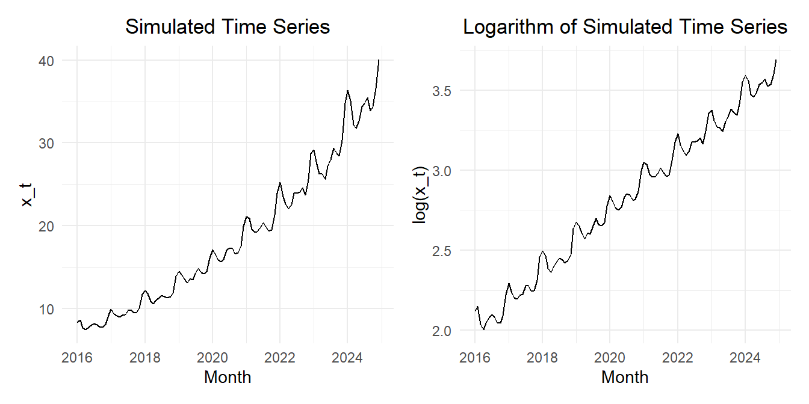
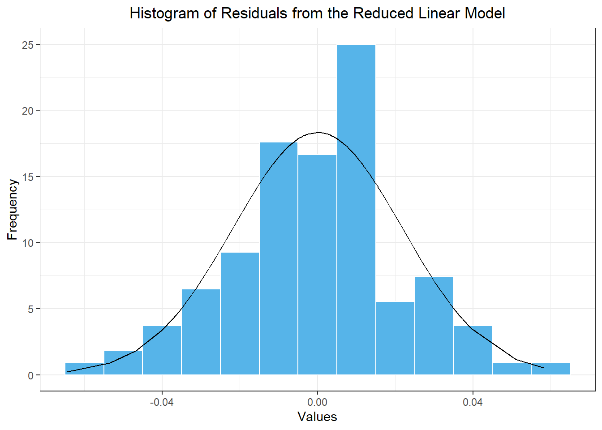
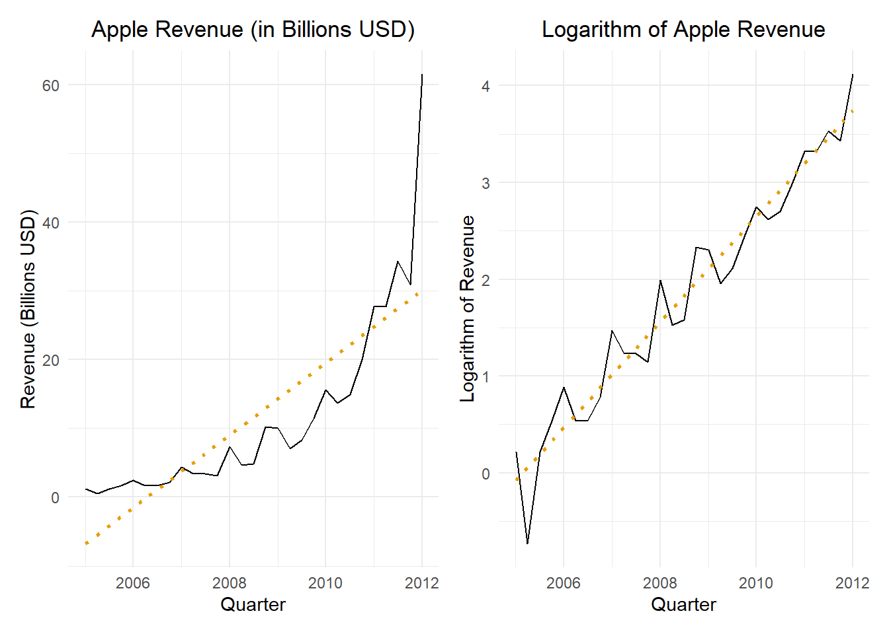
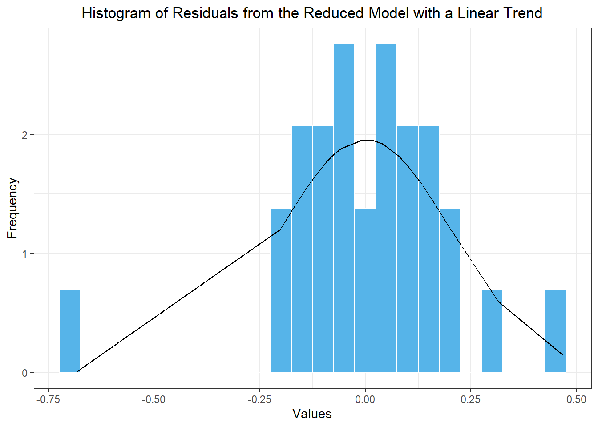
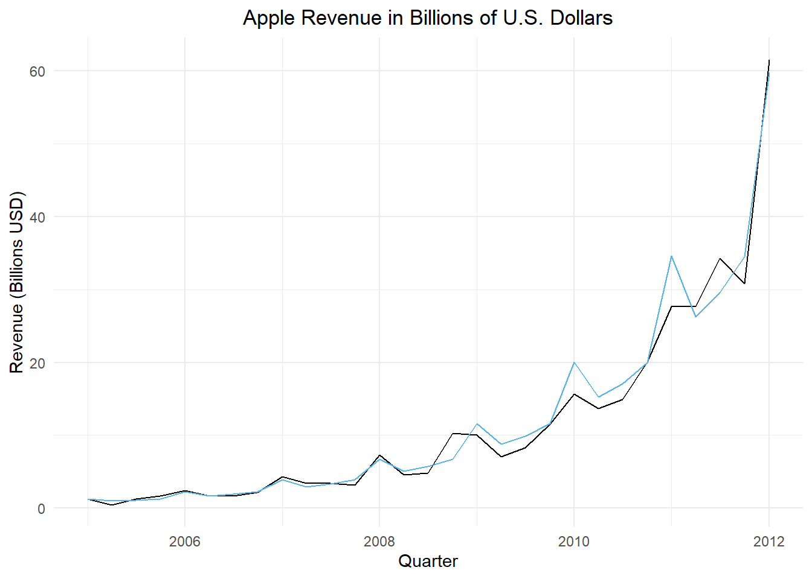
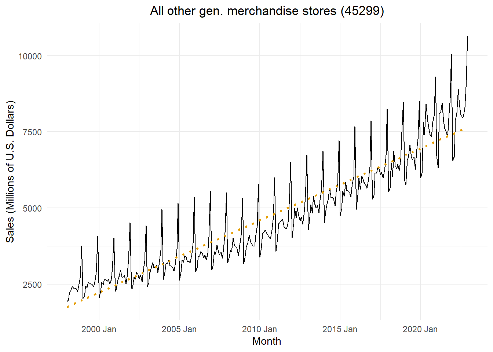

Forecasting, Inverse Transformation, and Bias Correction
Chapter 5: Lesson 5
Learning Outcomes
Apply logarithmic transformations to time series
Apply a log-transformation to a multiplicative time series
Apply the bias correction factor for inverse transformations
State the bias correction procedure for log-transform estimates
Explain when to use the bias correction factor
Use the bias correction factor for a log-transform model
Forecast using the inverse-transform and bias correction of a log-transformed model
Preparation
Read Sections 5.9-5.11
Learning Journal Exchange (10 min)
Review another student’s journal
What would you add to your learning journal after reading another student’s?
What would you recommend the other student add to their learning journal?
Sign the Learning Journal review sheet for your peer
Class Activity: Anti-Log Transformation and Bias Correction on Simulated Data (10 min)
Forecasts for a Simulated Time Series
In the previous lesson, we simulated a time series with an exponential trend. In this lesson, we will forecast future values based on our model.
Figure 1 shows the simulated time series and the time series after the natural logarithm is applied.
Show the code
set.seed(12345)n_years <-9# Number of years to simulaten_months <- n_years *12# Number of monthssigma <- .05# Standard deviation of random termz_t <-rnorm(n = n_months, mean =0, sd = sigma)dates_seq <-seq(floor_date(now(), unit ="year"), length.out=n_months +1, by="-1 month") |>floor_date(unit ="month") |>sort() |>head(n_months)sim_ts <-tibble(t =1:n_months,dates = dates_seq,random =arima.sim(model=list(ar=c(.5,0.2)), n = n_months, sd =0.02),x_t =exp(2+0.015* t +0.03*sin(2* pi *1* t /12) +0.04*cos(2* pi *1* t /12) +0.05*sin(2* pi *2* t /12) +0.03*cos(2* pi *2* t /12) +0.01*sin(2* pi *3* t /12) +0.005*cos(2* pi *3* t /12) + random )) |>mutate(cos1 =cos(2* pi *1* t /12),cos2 =cos(2* pi *2* t /12),cos3 =cos(2* pi *3* t /12),cos4 =cos(2* pi *4* t /12),cos5 =cos(2* pi *5* t /12),cos6 =cos(2* pi *6* t /12),sin1 =sin(2* pi *1* t /12),sin2 =sin(2* pi *2* t /12),sin3 =sin(2* pi *3* t /12),sin4 =sin(2* pi *4* t /12),sin5 =sin(2* pi *5* t /12),sin6 =sin(2* pi *6* t /12)) |>mutate(std_t = (t -mean(t)) /sd(t)) |>as_tsibble(index = dates)sim_plot_raw <- sim_ts |>autoplot(.vars = x_t) +labs(x ="Month",y ="x_t",title ="Simulated Time Series" ) +theme_minimal() +theme(plot.title =element_text(hjust =0.5) )sim_plot_log <- sim_ts |>autoplot(.vars =log(x_t)) +labs(x ="Month",y ="log(x_t)",title ="Logarithm of Simulated Time Series" ) +theme_minimal() +theme(plot.title =element_text(hjust =0.5) )sim_plot_raw | sim_plot_log

Figure 1: Time plot of the time series (left) and the natural logarithm of the time series (right)
We can use the forecast() function to predict future values of this time series. Table 1 displays the output of the forecast() command. Note that the column labeled x_t (i.e. \(x_t\)), representing the time series is populated with information tied to a normal distribution. The mean and standard deviation specified are the estimated parameters for the distribution of the predicted values of \(\log(x_t)\). If you raise \(e\) to the power of the mean, you get the values in the .mean column.
Show the code
# Fit model (OLS)sim_reduced_linear_lm1 <- sim_ts |>model(sim_reduced_linear1 =TSLM(log(x_t) ~ std_t + sin1 + cos1 + sin2 + cos2 + sin3 + cos3))# Compute forecastn_years_forecast <-5n_months_forecast <-12* n_years_forecastnew_dat <-tibble(t = n_months:(n_months + n_months_forecast )) |>mutate(dates =seq(max(dates_seq), length.out=n_months_forecast +1, by="1 month") ) |>mutate(std_t = (t -mean(pull(sim_ts, t))) /sd(pull(sim_ts, t)),sin1 =sin(2* pi *1* t /12),cos1 =cos(2* pi *1* t /12),sin2 =sin(2* pi *2* t /12),cos2 =cos(2* pi *2* t /12),sin3 =sin(2* pi *3* t /12),cos3 =cos(2* pi *3* t /12),sin4 =sin(2* pi *4* t /12),cos4 =cos(2* pi *4* t /12),sin5 =sin(2* pi *5* t /12),cos5 =cos(2* pi *5* t /12),cos6 =cos(2* pi *6* t /12) ) |>as_tsibble(index = dates)sim_reduced_linear_lm1 |>forecast(new_data = new_dat)
Table 1: Output of the forecast() command for the simulated time series
.model
dates
x_t
.mean
t
std_t
sin1
cos1
sin2
cos2
sin3
cos3
sim_reduced_linear1
2023-12-01
t(N(3.7, 0.00055))
40.714
108
1.708
0
1
0
1
0
1
...
sim_reduced_linear1
2024-01-01
t(N(3.8, 0.00056))
43.133
109
1.74
0.5
0.866
0.866
0.5
1
0
...
sim_reduced_linear1
2024-02-01
t(N(3.7, 0.00056))
41.625
110
1.772
0.866
0.5
0.866
-0.5
0
-1
...
sim_reduced_linear1
2024-03-01
t(N(3.7, 0.00056))
39.159
111
1.804
1
0
0
-1
-1
0
...
⋮
⋮
⋮
⋮
⋮
⋮
⋮
⋮
⋮
⋮
⋮
⋮
⋮
sim_reduced_linear1
2028-11-01
t(N(4.5, 6e-04))
90.307
167
3.592
-0.5
0.866
-0.866
0.5
-1
0
...
sim_reduced_linear1
2028-12-01
t(N(4.6, 6e-04))
101.132
168
3.624
0
1
0
1
0
1
...
Figure 2 illustrates the forecasted values for the time series.
Figure 2: Forecasted values of the time series with 95% confidence bands
Bias Correction
The forecasts presented above were computed by raising \(e\) to the power of the predicted log-values. Unfortunately, this introduces bias in the forecasted means. This bias tends to be large if the regression model does not fit the data closely.
The textbook points out that the bias correction should only be applied for means, not for simulated values. This means that if you are simulating transformed values, and you apply the inverse of your original transformation, the resulting values are appropriate.
When we apply the inverse transform to the residual series, we introduce a bias. We can account for this bias applying one of two adjustments to our mean values. The theory behind this transformations is alluded to in the textbook, but is not essential.
There are two common patterns observed in the residual series: (1) Gaussian white noise or (2) Negatively-skewed values. Note that negatively-skewed values are the same as left-skewed values.
We can use the skewness statistic to assess the shape of the residual series. When the skewness is less than -1 or greater than 1, we say that the distribution is highly skewed. For skewness values between -1 and -0.5 or between 0.5 and 1, we say there is moderate skewness. If skewness lies between -0.5 and 0.5, the distribution is considered roughly symmetric.
Log-Normal Correction
Normally-Distributed Residual Series
If the residual series follows a normal distribution, we multiply the means of the forecasted values \(\hat x_t\) by the factor \(e^{\frac{1}{2} \sigma^2}\):
where \(\left\{ \hat x_t: t = 1, \ldots, n \right\}\) gives the values of the forecasted series, and \(\left\{ \hat x_t': t = 1, \ldots, n \right\}\) is the adjusted forecasted values.
Emperical Correction
Negatively-Skewed Residual Series
If the residual series demonstrates negative skewness, then we can adjust the forecasts \(\left\{ \hat x_t \right\}\) as follows:
From this, we observe that for the simulated data, \(R^2 = 0.998\). This indicates that the model explains a high proportion of the variation in the data. The log-normal adjustment is \(1.00025\), and the emperical adjustment is \(1.00023\). Both of these values are extremely close to 1, so they will have a negligible impact on the predicted values.
This result does not generalize. In other situations, there can be a substantial effect of this bias on the predicted means.
Histogram of residuals
Figure 3 gives a histogram of the residuals and compute the skewness of the residual series.
Show the code
sim_resid_df <- sim_reduced_linear_lm1 |>residuals() |>as_tibble() |> dplyr::select(.resid) |>rename(x = .resid) sim_resid_df |>mutate(density =dnorm(x, mean(sim_resid_df$x), sd(sim_resid_df$x))) |>ggplot(aes(x = x)) +geom_histogram(aes(y =after_stat(density)),color ="white", fill ="#56B4E9", binwidth =0.01) +geom_line(aes(x = x, y = density)) +theme_bw() +labs(x ="Values",y ="Frequency",title ="Histogram of Residuals from the Reduced Linear Model" ) +theme(plot.title =element_text(hjust =0.5) )

Figure 3: Histogram of the values in the residual series based on the model with a linear trend and seasonal Fourier terms where i≤3
We can use the command skewness(sim_resid_df$x) to compute the skewness of these residuals: -0.135. This number is close to zero (specifically between -0.5 and 0.5,) so we conclude that the residual series is approximately normally distributed. We can apply the log-normal correction to our mean forecast values.
Class Activity: Apple Revenue (10 min)
We take another look at the quarterly revenue reported by Apple Inc. from Q1 of 2005 through Q1 of 2012
Visualizing the Time Series
Figure 4 gives the time plot illustrating the quarterly revenue reported by Apple from the first quarter of 2005 through the first quarter of 2012.
Show the code
apple_raw <- rio::import("https://byuistats.github.io/timeseries/data/apple_revenue.csv") |>mutate(dates =round_date(mdy(date), unit ="quarter")) |>arrange(dates)apple_ts <- apple_raw |>filter(dates <=my("Jan 2012")) |> dplyr::select(dates, revenue_billions) |>mutate(t =1:n()) |>mutate(std_t = (t -mean(t)) /sd(t)) |>mutate(sin1 =sin(2* pi *1* t /4),cos1 =cos(2* pi *1* t /4),cos2 =cos(2* pi *2* t /4) ) |>as_tsibble(index = dates)apple_plot_regular <- apple_ts |>autoplot(.vars = revenue_billions) +stat_smooth(method ="lm", formula = y ~ x, geom ="smooth",se =FALSE,color ="#E69F00",linetype ="dotted") +labs(x ="Quarter",y ="Revenue (Billions USD)",title ="Apple Revenue (in Billions USD)" ) +theme_minimal() +theme(plot.title =element_text(hjust =0.5))apple_plot_transformed <- apple_ts |>autoplot(.vars =log(revenue_billions)) +stat_smooth(method ="lm", formula = y ~ x, geom ="smooth",se =FALSE,color ="#E69F00",linetype ="dotted") +labs(x ="Quarter",y ="Logarithm of Revenue",title ="Logarithm of Apple Revenue" ) +theme_minimal() +theme(plot.title =element_text(hjust =0.5))apple_plot_regular | apple_plot_transformed

Figure 4: Apple quarterly revenue figures (in billions of U.S. dollars) from Q1 of 2005 to Q1 of 2012; the figure on the left presents the revenue in dollars and the figure on the right gives the logarithm of the quarterly revenue; a simple linear regression line is given for reference
Finding a Suitable Model
We start by fitting a cubic trend to the logarithm of the quarterly revenues. The full model is fitted here:
Show the code
# Cubic model with standardized time variableapple_full_cubic_lm <- apple_ts |>model(apple_full_cubic =TSLM(log(revenue_billions) ~ std_t +I(std_t^2) +I(std_t^3) + sin1 + cos1 + cos2 )) # Note sin2 is omittedapple_full_cubic_lm |>tidy() |>mutate(sig = p.value <0.05)
The quadratic trend term is not statistically significant. Nevertheless, we will still fit a reduced model with a quadratic trend but we will omit the non-signficant seasonal Fourier term, cos1.
Show the code
# Quadratic trend with standardized time variableapple_reduced_quad_lm1 <- apple_ts |>model(apple_reduced_quad1 =TSLM(log(revenue_billions) ~ std_t +I(std_t^2) + sin1 + cos2 )) # Note sin2 is omittedapple_reduced_quad_lm1 |>tidy() |>mutate(sig = p.value <0.05)
The coefficient on the cos1 seasonal Fourier term is not statistically significant. We now fit a reduced model that only contains the significant terms from the full model with a linear trend.
Show the code
# Linear trend with standardized time variableapple_reduced_linear_lm1 <- apple_ts |>model(apple_reduced_linear1 =TSLM(log(revenue_billions) ~ std_t + sin1 + cos2 )) # Note sin2 is omittedapple_reduced_linear_lm1 |>tidy() |>mutate(sig = p.value <0.05)
Table 2: Comparison of the AIC, AICc, and BIC values for the models fitted to the logarithm of the simulated time series.
Model
AIC
AICc
BIC
apple_full_cubic
-84
-76.8
-73.1
apple_full_quad
-82.5
-77.2
-73
apple_reduced_quad1
-81.3
-77.5
-73.1
apple_full_linear
**-84.4**
-80.6
-76.2
apple_reduced_linear1
-83.2
**-80.6**
**-76.4**
We will apply the apple_reduced_linear1 model.
Using the Residuals to Determine the Appropriate Correction
The residuals of this model are illustrated in Figure 5.
Show the code
apple_resid_df <- model_combined |> dplyr::select(apple_reduced_linear1) |>residuals() |>as_tibble() |> dplyr::select(.resid) |>rename(x = .resid) apple_resid_df |>mutate(density =dnorm(x, mean(apple_resid_df$x), sd(apple_resid_df$x))) |>ggplot(aes(x = x)) +geom_histogram(aes(y =after_stat(density)),color ="white", fill ="#56B4E9", binwidth =0.05) +geom_line(aes(x = x, y = density)) +theme_bw() +labs(x ="Values",y ="Frequency",title ="Histogram of Residuals from the Reduced Model with a Linear Trend" ) +theme(plot.title =element_text(hjust =0.5) )

Figure 5: Histogram of the residuals from the reduced model with a linear trend component
Using the command skewness(apple_resid_df$x), we compute the skewness of these residuals as: -0.799. This number is not close to zero (it is between -1 and -0.5) indicating moderate negative skewness. We would therefore apply the empirical correction to our mean forecast values.
Applying the Correction Factor
Table 3 summarizes some of the corrected mean values. Note that in this particular case, the corrected values are very close to the uncorrected values.
apple_ts |>autoplot(.vars = revenue_billions) +geom_line(data = apple_pred, aes(x = dates, y = .mean_correction), color ="#56B4E9") +labs(x ="Quarter",y ="Revenue (Billions USD)",title ="Apple Revenue in Billions of U.S. Dollars" ) +theme_minimal() +theme(plot.title =element_text(hjust =0.5))
Warning: The output of `fortify(<fable>)` has changed to better suit usage with the ggdist package.
If you're using it to extract intervals, consider using `hilo()` to compute intervals, and `unpack_hilo()` to obtain values.

Figure 6: Apple Inc.’s quarterly revenue in billions of U.S. dollars through first quarter of 2012 (in black) and the fitted regression model (in blue)
This time series was used as an example. We are obviously not interested in forecasting future values using this model. However, this is an excellent example of real-world exponential growth in a time series with a seasonal component. Limiting factors prevent exponential growth from being sustainable in the long run. After 2012, the Apple quarterly revenues follow a different, but very impressive, model. This is illustrated in Figure 7.
Figure 7: Apple Inc.’s quarterly revenue in billions of U.S. dollars; values beginning with the first quarter of 2012 are shown in orange
Choose One of the Following Small-Group Activities (25 min)
Small-Group Activity: Retail Sales (All Other General Merchandise Stores)
The code below downloads and gives the time plot for the total monthly sales in the United States for retail stores with the NAICS category 45299, “All Other General Merchandise Stores.” The time plot is given in Figure Figure 8.
Show the code
# Read in retail sales data for "all other general merchandise stores"retail_ts <- rio::import("https://byuistats.github.io/timeseries/data/retail_by_business_type.parquet") |>filter(naics ==45299) |>filter(as_date(month) >=my("Jan 1998")) |>mutate(t =1:n()) |>mutate(std_t = (t -mean(t)) /sd(t)) |>mutate(cos1 =cos(2* pi *1* t /12),cos2 =cos(2* pi *2* t /12),cos3 =cos(2* pi *3* t /12),cos4 =cos(2* pi *4* t /12),cos5 =cos(2* pi *5* t /12),cos6 =cos(2* pi *6* t /12),sin1 =sin(2* pi *1* t /12),sin2 =sin(2* pi *2* t /12),sin3 =sin(2* pi *3* t /12),sin4 =sin(2* pi *4* t /12),sin5 =sin(2* pi *5* t /12) ) |>as_tsibble(index = month)retail_ts |>autoplot(.vars = sales_millions) +stat_smooth(method ="lm", formula = y ~ x, geom ="smooth",se =FALSE,color ="#E69F00",linetype ="dotted") +labs(x ="Month",y ="Sales (Millions of U.S. Dollars)",title =paste0(retail_ts$business[1], " (", retail_ts$naics[1], ")") ) +theme_minimal() +theme(plot.title =element_text(hjust =0.5))

Figure 8: Time plot of the total monthly retail sales for all other general merchandise stores (45299)
Check Your Understanding
Use the retail sales data to do the following.
Select an appropriate fitted model using the AIC, AICc, or BIC critera.
Use the residuals to determine the appropriate correction for the data.
Forecast the data for the next 5 years.
Apply the appropriate correction to the forecasted values.
Plot the fitted (forecasted) values along with the time series.
Small-Group Activity: Industrial Electricity Consumption in Texas
These data represent the amount of electricity used each month for industrial applications in Texas.
Show the code
elec_ts <- rio::import("https://byuistats.github.io/timeseries/data/electricity_tx.csv") |> dplyr::select(-comments) |>mutate(month =my(month)) |>mutate(t =1:n(),std_t = (t -mean(t)) /sd(t) ) |>mutate(cos1 =cos(2* pi *1* t /12),cos2 =cos(2* pi *2* t /12),cos3 =cos(2* pi *3* t /12),cos4 =cos(2* pi *4* t /12),cos5 =cos(2* pi *5* t /12),cos6 =cos(2* pi *6* t /12),sin1 =sin(2* pi *1* t /12),sin2 =sin(2* pi *2* t /12),sin3 =sin(2* pi *3* t /12),sin4 =sin(2* pi *4* t /12),sin5 =sin(2* pi *5* t /12) ) |>as_tsibble(index = month)elec_plot_raw <- elec_ts |>autoplot(.vars = megawatthours) +labs(x ="Month",y ="Megawatt-hours",title ="Texas' Industrial Electricity Use" ) +theme_minimal() +theme(plot.title =element_text(hjust =0.5) )elec_plot_log <- elec_ts |>autoplot(.vars =log(megawatthours)) +labs(x ="Month",y ="log(Megwatt-hours)",title ="Log of Texas' Industrial Electricity Use" ) +theme_minimal() +theme(plot.title =element_text(hjust =0.5) )elec_plot_raw | elec_plot_log
Check Your Understanding
Use the Texas industrial electricity consumption data to do the following.
Select an appropriate fitted model using the AIC, AICc, or BIC critera.
Use the residuals to determine the appropriate correction for the data.
Forecast the data for the next 5 years.
Apply the appropriate correction to the forecasted values.
Plot the fitted (forecasted) values along with the time series.